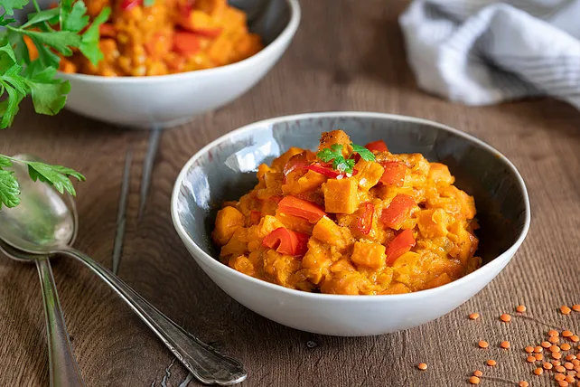

Rote Linsen Curry mit Süßkartoffeln
| 450 | g | Süßkartoffel(n) |
| 1 | große Paprikaschote(n), rote | |
| 2 | Knoblauchzehe(n) | |
| 2 | mittel-große Zwiebeln | |
| 1 | EL | Olivenöl |
| 2 | EL | Tomatenmark |
| 2 | TL | Currypulver |
| 2 | TL | Kurkuma |
| 1 | TL | Garam Masala |
| Salz und Pfeffer | ||
| 200 | g | Linsen, rote |
| 500 | ml | Kokosmilch |
| 250 | ml | Gemüsebrühe |
Zubereitung
Die Süßkartoffeln schälen und würfeln. Die Paprikaschote
würfeln, den Knoblauch schälen und die Zwiebeln klein
schneiden.
Das Olivenöl in einem großen Topf erhitzen und die
Zwiebeln glasig anschwitzen. Den Knoblauch durch die
Presse in den Topf drücken, kurz mitbraten und dann
Süßkartoffeln und Paprika in den Topf geben. Das
Tomatenmark und die Gewürze dazugeben und kurz
mitbraten, anschließend die Linsen hinzufügen. Nun alles
mit Kokosmilch und Gemüsebrühe aufgießen und ca. 25 min.
köcheln lassen.
Das Curry schmeckt am nächsten Tag meist noch besser und
lässt sich auch gut einfrieren.
Rezept erstellt von